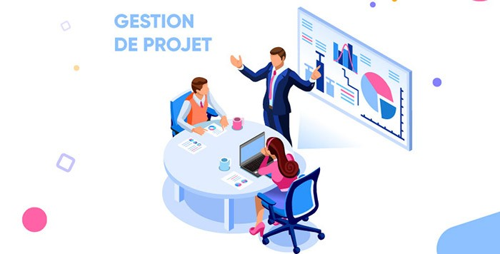

Documentation CPGEOM
Bienvenue dans la documentation de formation CPGEOM - Chef de projet géomatique.
Cette documentation sert de carnet de cours, de support de révision et de base de ressources techniques. Elle regroupe les notions essentielles pour conduire un projet géomatique : cadrage, données spatiales, bases de données, contrôle qualité, automatisation, télédétection et production cartographique.

Modules de formation
Objectifs du site
Objectif |
Ce que cela permet |
|---|---|
Centraliser les cours |
Retrouver rapidement les notions importantes de la formation. |
Structurer les apprentissages |
Classer les contenus par thème et par usage professionnel. |
Préparer les révisions |
Identifier les compétences, méthodes et outils à maîtriser. |
Documenter les travaux pratiques |
Garder une trace claire des exercices, scripts et manipulations. |
Construire un support professionnel |
Réutiliser les fiches, procédures et ressources dans de futurs projets. |
Parcours conseillé
Étape |
Intention |
Module |
|---|---|---|
1 |
Cadrer le besoin, organiser le travail et suivre un projet |
|
2 |
Structurer, stocker et interroger les données géographiques |
|
3 |
Vérifier la fiabilité des données et corriger les anomalies |
|
4 |
Choisir les bons formats et préparer les échanges |
|
5 |
Exploiter les images satellites et les traitements raster |
|
6 |
Automatiser les traitements et scripts SIG |
|
7 |
Décrire, partager et valoriser les données |
|
8 |
Produire des analyses, cartes et représentations 3D |
Vue d’ensemble des modules
Gestion de projet
Méthodes de cadrage, organisation, planification, suivi, gestion des risques, communication et livrables.
Base de données & PostGIS
Notions de PostgreSQL, SQL, PostGIS, modélisation, géométries, index spatiaux et administration de bases géographiques.

Contrôle qualité
Vérification de la complétude, cohérence, précision et conformité des données géographiques.
Formats ESRI
Formats SIG, shapefile, geodatabase, échanges de données, contraintes techniques et bonnes pratiques.
Télédétection
Images satellites, bandes spectrales, compositions colorées, indices, classification et traitements raster.
Python & PyQGIS
Automatisation des tâches répétitives, scripts Python, traitements QGIS et logique de production.
Données & interopérabilité
Cycle de vie des données, métadonnées, VRT, droit informatique, publication et partage.
Géomatique, SIG & 3D
QGIS, projections, couches vecteur/raster, analyse spatiale, cartographie et représentation 3D.
Compétences travaillées
Compétence |
Niveau visé |
|---|---|
Gestion de projet géomatique |
Intermédiaire à avancé |
PostgreSQL / PostGIS |
Intermédiaire |
QGIS et analyse spatiale |
Avancé |
Python et PyQGIS |
Progressif |
Télédétection |
Intermédiaire |
Contrôle qualité des données |
Intermédiaire |
Documentation technique |
Professionnel |
Note
Cette documentation est évolutive. Les pages seront enrichies progressivement avec les notes de cours, les exercices, les commandes, les captures et les travaux pratiques réalisés pendant la formation.